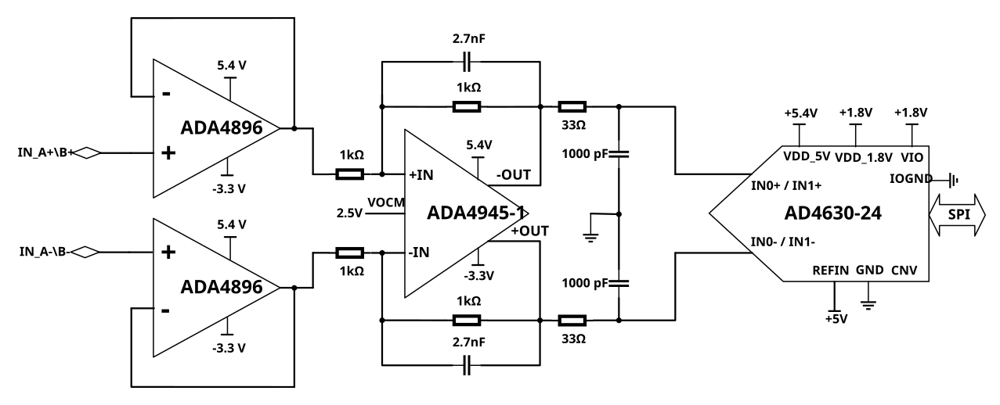

User guide
Evaluation boards available
Two different EVAL board revisions have been released on the market for AD4630-24 and AD4630-16, the old Rev C which is obsolete and the new revision, Rev E. On the other hand, there is only one existing revision for AD4030-24, Rev A/B, which is still available:
AD4630-24 and AD4630-16 Rev C (Obsolete)
Two differential input channels with SMA connectors
A high precision buffered band gap 5 V reference (LTC6655).
An analog front end (AFE) that provides signal conditioning and drive for the AD4630-24 and AD4630-16. The AFE can be configured to use either the ADA4896-2 in a dual buffer configuration, or the ADA4945-1, a fully differential amplifier.
An optional 100 MHz clock source that provides a reference clock for the FPGA and ADC.
Full power supply solution that provides all the necessary voltage rails from a 12 V supply that is provided from the ZedBoard through the FMC connector.

AD4630-24 and AD4630-16 Rev E
Two differential input channels with SMA connectors
A high precision, low power and low noise 5 V reference ADR4550. There is also the option to mount a high precision buffered band gap 5 V reference, the LTC6655.
An analog front end (AFE) that provides signal conditioning and drive for the AD4630-24 and AD4630-16. The AFE can be configured to use either the ADA4896-2 in a dual buffer configuration, or the ADA4945-1, a fully differential amplifier.
Multiple different input configurations with the amplifier ADA4896-2
An optional 100 MHz clock source that provides a reference clock for the FPGA and ADC.
New form factor and improved full power supply solution that provides all the necessary voltage rails from a 12 V supply that is provided from the ZedBoard through the FMC connector.
Extra connectors to supply the board externally if needed.
Important
New boards EVAL-AD4630-24FMCZ and EVAL-AD4630-16FMCZ REV E have a date code bigger than DC>2435

AD4030-24 Rev A/B
One differential input channel with SMA connectors
A high precision buffered band gap 5 V reference (LTC6655).
An analog front end (AFE) that provides signal conditioning and drive for the AD4030-24. The AFE can be configured to use either the ADA4896-2 in a dual buffer configuration, or the ADA4945-1, a fully differential amplifier.
An optional 100 MHz clock source that provides a reference clock for the FPGA and ADC.
Full power supply solution that provides all the necessary voltage rails from a 12 V supply that is provided from the ZedBoard through the FMC connector.

Full descriptions of these products are available in their respective data sheets, which should be consulted when using the evaluation board.
Custom board design requirements
The evaluation boards have been designed to work with off-the-shelf 3rd party system boards that can be used to manage the data capture process as well as host embedded applications development. The DUT board may be either the evaluation board for the AD463x/AD403x, or a board that the user has designed. The only requirements for the user-designed board are:
The board should have an FMC connector.
The digital interface through the FMC connector should use the same pin and signal assignments used on the EVAL-AD4630-24FMCZ/EVAL-AD4030-24FMCZ board (see EVAL-AD4630-24 / EVAL-AD4030-24 for schematics). Otherwise, changing these assignments will require a modification of the HDL and a recompile. ADI provides the source files for the FPGA HDL, but it cannot support debug of user modifications to the source.
It is recommended that the board provide a reference clock (100 MHz or less); see the Clock Circuit section below for more information on the reference clock requirements.
It is recommended to derive the digital IO voltage from the ZedBoard. The EVAL-AD4630-24FMCZ schematics provide an example of this.
Optional: The ZedBoard provides a 12 V supply rail through the FMC connector which can be used to provide the main power supply for the user board. However, the latter may also be powered from a separate external supply.
Hardware guide
Evaluation Board Hardware (Rev C and AD4030-24 Rev A/B)

Power Supplies
The primary 12 V supply to the EVAL-AD4X30-XXFMCZ comes from the ZedBoard through the FMC connector. 12 V is regulated down to an intermediate voltage with a switcher and then is post regulated down to the various voltage rails. 12 V is also used to generate the negative rails for the buffers and final drive amplifiers.
Each of the voltage rails are brought out to turrets so they can be easily measured. A bench supply can be used to drive these turrets to supply the evaluation board manually. This is useful if a current measurement is required. Each supply is decoupled where it enters the board and at each device. A single ground plane is used on this board to minimize the effect of high frequency interference. The voltage ranges listed in the table below represent the expected ranges for the board. If the user desires to connect external supplies to the board, the amplifier data sheets and the AD4630-24 datasheet, AD4030-24 datasheet or AD4630-16 datasheet should be consulted to ensure that the external supply values comply with the device requirements.
Reference Circuit
By default, the on-board LTC6655 provides a 5 V reference to the AD4630-24, AD4030-24 and AD4630-16. It drives the REFIN pin of the ADC through an R-C filter (R=100 Ohm, C=1 uF) that reduces low frequency noise. The REFIN pin is connected to an internal buffer, eliminating the need for an external buffer. However, if the user desires to use an external reference that drives the internal buffer, it can be attached to the EXT REF SMA connector (see figure below). R137 should be populated with a zero ohm resistor, and R136 should be open. The internal buffer can be bypassed by attaching an external reference to the REF turret on the board. To reduce the ADC power consumption, the internal reference buffer can be disabled (see respective product’s data sheet).

Figure 5 EVAL-AD4X30-XXFMCZ reference circuit (AD4630-24 shown)
Clock Circuit
The ZedBoard uses a 100 MHz reference clock to generate its internal clocks as well as the sample clock for the AD4630-24, AD4030-24 or AD4630-16. To simplify system operation an on-board 100 MHz, low-jitter crystal oscillator (XO) on the EVAL-AD4X30-XXFMCZ board supplies this clock as the default configuration, as shown in the figure below. To use an external clock source, remove R55 and connect an external clock source to J1, the CLK IN SMA. The external clock frequency must be < 100 MHz. The user should take care to use a low jitter clock source to achieve best system performance. The external clock level should be 10 to 12 dBm.

Analog Front End
The EVAL-AD4X30-XXFMCZ has a flexible driver network that can be configured for a variety of topologies. The default network is shown in Figure 7, in which the ADA4945-1 fully differential amplifier is driving the ADC. It can accommodate both single-ended and differential signal sources, and drives the ADC differentially. As populated, it has a unity gain. When using a single-ended source, the unused input should be terminated with the equivalent source impedance.
Note
As implemented, the ADA4945-1 driver on the evaluation board preserves the differential value of IN+ - IN- (with appropriate gain scaling applied), but inverts the signal polarity that is injected to the ADC. Hence, if a positive DC signal is applied to the input, it should be attached to IN_A/B-, and likewise, a negative DC signal should be attached to IN_A/B+ to preserve the signal polarity.

Function |
Single ended to differential via differential amplifier |
|---|---|
Comments |
Best distortion |
Required changes from default configuration |
No changes required |
A second topology can be seen in Figure 8. This topology consists of a pair of unity gain buffers, the ADA4896-2. It also can be driven by either a single-ended or differential source. This network is ideal for observing the best noise performance of the AD4630-16, due to the low voltage and current noise of the ADA4896-2 (1 nV/rtHz and 2.8 pA/rtHz, respectively). It also offers a common mode input impedance of 10 MOhm and a wide input common mode voltage range of -4.9 V to +4.1 V (when using +/- 5 V supplies).
Note
This driver circuit also inverts the polarity of the input signal. To preserve polarity when measuring DC voltages, connect a positive voltage to IN_A/B-. Likewise, a negative DC voltage should be connected to IN_A/B+.

Figure 9 shows a driver network which combines the ADA4896-2 with the ADA4945-1. This circuit is ideal for applications that require a high input impedance along with gain to maximize the input range of the ADC. The gain of the ADA4945-1 can be modified by changing either the feedback resistors or input resistors.
{kind=link}

Figure 9 High Impedance Buffer with Gain AFE (AD4630-24 shown)
Figure 10 shows an input configuration that allows the AD4630-16 to be directly driven from the SMA connectors. This enables testing with alternative driver configurations mounted on an external PCB.

Evaluation Board Hardware (Rev E)

Power Supplies
The primary 12 V supply to the EVAL-AD4X30-XXFMCZ comes from the ZedBoard through the FMC connector. 12 V is regulated down to an intermediate voltage, +7.5 V, with a switcher and then is post regulated down to the various voltage rails. 12 V is also used to generate the negative rails, -3.3 V for the buffers and final drive amplifiers.
Each of the voltage rails are brought out to turrets so they can be easily measured. A bench supply can be used to drive these turrets to supply the evaluation board manually. This is useful if a current measurement is required. Each supply is decoupled where it enters the board and at each device. A single ground plane is used on this board to minimize the effect of high frequency interference. The voltage ranges listed in the table below represent the expected ranges for the board. If the user desires to connect external supplies to the board, the amplifier data sheets and the AD4630-24 datasheet, AD4030-24 datasheet or AD4630-16 datasheet should be consulted to ensure that the external supply values comply with the device requirements.
The following block diagram shows all the different power supplies options available in the new evaluation board. If necessary, it is possible to supply all the LDOs directly with external power supplies via J7 and J8. There are also two different options to generate the -3.3 V although only the LT3093 is mounted on the board.

Reference Circuit
By default, the on-board ADR4550 provides a 5 V reference to the AD4630-24 and AD4630-16. It drives the REFIN pin of the ADC through an R-C filter (R=100 Ohm, C=22 uF) that reduces the low frequency noise. The REFIN pin is connected to an internal buffer, eliminating the need for an external buffer. However, if the user desires to use an external reference that drives the internal buffer, it can be attached to the J5 SMA connector (see figure below). R124 should be populated with a zero ohm resistor, and R116 and R123 should be open. The internal buffer can be bypassed by attaching an external reference to the REF turret on the board. To reduce the ADC power consumption, the internal reference buffer can be disabled (see respective product’s data sheet). There is also the option to mount the LTC6655 or the LTC6655LN reference which is suitable to use together with the unbuffered input of the ADC.

Figure 13 EVAL-AD4630-XXFMCZ reference circuit (AD4630-24 shown)
Clock Circuit
The ZedBoard uses a 100 MHz reference clock to generate its internal clocks as well as the sample clock for the AD4630-24 or AD4630-16. To simplify system operation an on-board 100 MHz, low-jitter crystal oscillator (XO) on the EVAL-AD4630-XXFMCZ board supplies this clock as the default configuration, as shown in the figure below. To use an external clock source, remove R1 and connect an external clock source to J6, the CLK IN SMA. The external clock frequency must be < 100 MHz. The user should take care to use a low jitter clock source to achieve best system performance. The external clock level should be 10 to 12 dBm.

Figure 14 EVAL-AD4630-XXFMCZ clock circuit (AD4630-24 shown)
Analog Front End
The EVAL-AD4630-XXFMCZ has a flexible driver network that can be configured for a variety of topologies. The default network is shown in Figure 15, in which the ADA4945-1 fully differential amplifier is driving the ADC. It can accommodate both single-ended and differential signal sources, and drives the ADC differentially. As populated, it has a unity gain. When using a single-ended source, the unused input should be terminated with the equivalent source impedance.
Note
As implemented, the ADA4945-1 driver on the evaluation board preserves the differential value of IN+ - IN- (with appropriate gain scaling applied), but inverts the signal polarity that is injected to the ADC. Hence, if a positive DC signal is applied to the input, it should be attached to IN_A/B-, and likewise, a negative DC signal should be attached to IN_A/B+ to preserve the signal polarity.

Figure 15 Differential Driver AFE, default (AD4630-24 shown)
Function |
Single ended to differential via differential amplifier |
|---|---|
Comments |
Best distortion |
Required changes from default configuration |
No changes required |
There is one buffer used to generate common mode voltage, U26. The voltage can be adjusted from 0 V to Vref by selecting correctly the ratio between R98, (or R122 or R99) and R5.

A second topology can be seen in Figure 17. This topology consists of a pair of unity gain buffers, the ADA4896-2. It also can be driven by either a single-ended or differential source. This network is ideal for observing the best noise performance of the AD4630-16, due to the low voltage and current noise of the ADA4896-2 (1 nV/rtHz and 2.8 pA/rtHz, respectively). It also offers a common mode input impedance of 10 MOhm and a wide input common mode voltage range of -4.9 V to +4.1 V (when using +/- 5 V supplies). To use the full span of the ADC the input signal of each buffer needs to be centered at 2.5 V.

If the signal generator connected to the inputs of the ADC cannot generate a DC offset, there is the option to use the VOCM buffer to create a DC offset and connect it to the non-inverting input of the ADA4896 amplifiers like Figure 18.

Figure 18 High Impedance Buffer with VOCM generated internally
Another option available (Figure 19) on the board is to use the ADA4896 in an inverting configuration with the possibility of connecting a DC offset on the non-inverting pin. In this case it is necessary to have two input signals delayed 180 degrees and select the correct resistor values to generate a 2.5 V (R98 and R3) as VOCM.

Figure 20 shows an input configuration that allows the AD4630-16 to be directly driven from the SMA connectors. This enables testing with alternative driver configurations mounted on an external PCB.
Controller board
The ZedBoard, which is the system controller board, enables the configuration of the ADC and capture of data from the evaluation board by the PC via USB (or Ethernet). The AD4X30-XX family of parts support a multi-lane serial port interface (SPI) for each data converter channel. The SPI interface for each channel is connected to the ZedBoard via the FMC connector (P1). The ZedBoard functions as the communication link between the PC and connected evaluation board. It buffers samples captured from the evaluation board in its DDR3 memory. The ZedBoard requires power from a 12 V wall adapter (included with the ZedBoard). It hosts a Xilinx Zynq 7020 SoC, which contains two ARM Cortex-A9 Processors and a Series-7 FPGA with 85k Programmable Logic cells. A Linux OS runs on the host processor system. It communicates with the PC through either a USB 2.0 high speed port or a 10/100/1000 Ethernet port. The default software configuration uses USB.
Schematic, PCB Layout, Bill of Materials
The design file package contains the following:
Schematics
PCB Layout
Bill of Materials
The evaluation board schematic and other board files can also be found on the EVAL-AD4630-16, EVAL-AD4630-24 and EVAL-AD4030-24 web pages.
Software guide
Basic SW architecture
The AD463x evaluation board connects to the ZedBoard through an FMC connector. This connector hosts the following signal groups:
The digital interface between the ADC and the host processor (SoC).
The digital I/O power supply rail.
12 V power from the ZedBoard to the evaluation board.
A high speed system clock used by the SoC, sourced on the evaluation board.
The ZedBoard hosts a Xilinx Zynq7000 class SoC with dual ARM Cortex-A9 hard processors and FPGA fabric. The board boots from an SD card that is shipped with each evaluation board.
Two use cases are supported for developing a custom application using the EVAL-AD463x system. They are basically distinguished by the nature of the host processor for the ADC. ADI provides software components that support both use cases. The following table summarizes the use cases and ADI software components.
The SD card image that ships with the evaluation board contains multiple files that can be used to reconfigure the personality of the system to match one of the valid operating modes of the ADC. The /boot directory contains a Linux image (see below), a boot.bin file which contains the FPGA configuration (among other files), and a device tree file (device.dtb). The latter two files together define the operating configuration of the system. For most user-developed applications, the configuration files provided on the SD card, along with tools that can be used to set the desired configuration, are sufficient, meaning the user should not need to build a unique Linux image, rebuild HDL, or manually modify the devicetree.dtb file.
The following paragraphs provide additional details on the nature of these files.
An ADI-maintained Kuiper Linux distribution (uImage). Currently, the version that is installed on the SD card is customized to support product evaluation and has features that enable compatibility with ACE. Like the standard Kuiper Linux image, it also includes IIO support, which consists of:
LibIIO subsystem - a library of IIO functions that are used to create custom device drivers that run within the Linux system (see Libiio for more details). These drivers have already been generated for the AD463x/AD4030x and incorporated in the uImage file.
IIOD - An IIO daemon that exposes IIO devices over a network connection to a remote host.
More information on the general Kuiper Linux distribution can be found at Kuiper.
Device tree file that describes the attributes of the AD4630/AD4030 configuration. The attributes of the ADC node in the device tree set the clocking mode (SPI or Echo), data rate (single or dual edge), output data format (see data sheet), and number of active lanes per channel (1, 2, or 4). During boot, the system loads the device.dtb file contained in the boot directory. If the operating configuration of the ADC needs to be changed, the device tree must be updated with the new ADC attributes.
BOOT.BIN files that are used to configure the FPGA. The default boot.bin file in the boot directory will correspond to a specific interface operating mode, distinguished by clocking mode (SPI vs. Echo), number of active lanes per channel (1, 2, or 4), and data rate (SDR vs. DDR). The boot.bin must be synchronized to the ADC attributes in the device tree. Unique boot.bin files have been pre-generated and stored on the SD card for several different configurations. Table 13 lists the available configurations (boot.bin files) that correspond to clocking modes, lanes, data rate mode. These files are available on the SD card in sub-directories that are labeled according to the configuration. This simplifies the HDL architecture and avoids the introduction of bugs due to unnecessary complexity.
Linux Driver
The user guide for the AD463x family Linux driver can be found here: AD463x Linux Driver User Guide. The user guide provides:
links to the driver source code and device tree;
an overview of the AD463x device tree options and their attributes;
examples of how to test the driver using console commands;
examples on how to directly access device registers for debug;
other links to resources that have more information on IIO usage.
HDL
The AD463x HDL user guide can be found here: AD4630-FMC HDL project. The HDL user guide provides a high level description of the AD4630 HDL architecture, functionality, a link to the source file repository, and how to build a desired boot.bin configuration. Table 13 lists all of the preconfigured modes, so in most cases it is not necessary for the user to build a unique boot.bin file.
Note
The currently available boot.bin options only support Zone 2 capture, as this enables relaxed timing requirements for the interface. See the ADC data sheet for a description of Zone 2 capture.
No-OS Drivers
The No-OS driver can be used in a bare metal application or in a non-Linux RTOS environment. Some customization, or creation of an adaptation layer for the specific platform may be required. The AD463x-FMCZ no-OS Example Project provides a general description of the driver, code documentation, and source code links.
How to modify the SD card image
Users that are developing a custom application for the AD4630/AD4030 outside the ACE environment, using the ZedBoard running Linux, can modify the boot image to match one of the existing configurations listed in Table 13. You can alter the configuration inside of the board view of the AD4630-24 ACE plugin, click apply, wait 30 seconds and the new configuration will load.
If SD card contents have been corrupted, or the user desires to create another copy of the SD card image, instructions on how to program the SD card with a replacement/new image can be found at Using Kuiper Images.
System operational constraints
Sampling Frequency
The following table illustrates the maximum sampling rates that can be achieved based on the device configuration. Note that the FPGA SPI engine only supports Zone 2 data transfers from the AD4630/AD4030.
1 The sampling rate in Single lane, 32-bit output formats in SDR mode are limited by the FPGA SPI engine. This is not a limitation of the AD4630/AD4030 device.
The hardware is controlled and configured through the ACE Software. ACE is a desktop software application that allows the evaluation and control of multiple evaluation systems.
The evaluation board is also supported with the Libiio library. This library is cross-platform (Windows, Linux, Mac) with language bindings for C, C#, Python, and others. Applications that can be used with it are:
ADI IIO Oscilloscope
The IIO Oscilloscope is a cross-platform application for interfacing with IIO devices, enabling you to configure device parameters and visualize data.
Important
Make sure to download/update to the latest version of IIO Oscilloscope.
For Linux
Remote run on host
The IIO Oscilloscope application can be used to connect to another platform that has a connected device, to configure the device and read data from it. This application is not for performance testing, but rather showcasing the basic features.
Please see IIO Oscilloscope documentation for installation steps and more details.
Build and start osc on a network-enabled Linux host.
For Windows computers, open the application from the start menu.
Once the application is launched, go to Settings > Connect > URI and type “ip:” then the IP address of the target in the pop-up window. This IP can be found out with a command from the previous section of this documentation.
Scopy
Scopy is a cross-platform software toolbox for interfacing with ADI devices, enabling you to configure device parameters, visualize data, and perform advanced signal analysis.
Python
PyADI-IIO is an ADI maintained Python library of device specific abstraction modules. Each device module supports the simplified development of Python applications that use IIO by providing an API that takes care of many of the underlying IIO details. This section describes information on using the PyADI bindings for the AD4630/AD4030 family.
Installation
These instructions assume a fresh installation of all required software:
Download latest version of python3. The Python downloader should recognize the host operating system and then download the appropriate installer. If downloading for a different machine select the Python installer accordingly. (Do not run installer yet)
Run the installer as Administrator. During installation, check “Add Python 3.x.x to PATH” before clicking “Install Now”

Optional Python install: download and install a Python distribution such as Anaconda. Ensure to select the proper Python version and host operating system. Recommended - install a Python editor (eg. PyCharm community version). One can also use Spyder that comes with Anaconda.
Recommended - If using Anaconda, create a virtual environment for each project. Once the environment is created and activated, then:
Install pyadi-iio. If running Anaconda in Windows, run the Anaconda prompt and enter
pip install pyadi-iio. Detailed py-adi installation guide can be found PyADI-IIO.PyADI-IIO updates are published quarterly. It is recommended to run pip quarterly to get the latest updates.
Running the AD463x/AD403x example Python scripts
Generic examples for AD463x/AD403x are available in the source repo. The example code can be used for either AD4630-24 or AD4030-24 (and derivatives). Set the device_name parameter to ensure that channel operations are appropriately handled. Basic documentation can be found at API documentation.
Note that python does not automatically scan for usb context or an IP address
unless a scan is embedded in the python script. If a ZedBoard is connected via
an ethernet cable, then the argument passed in the ADC device instantiation
statement is uri="ip:analog.local" which is the default host name for the
ZedBoard (see code example below). If the default hostname of the board has been
changed, this should be used instead. If using a USB connection to the board,
then pass the IP address for the USB port (see code example for alternative USB
connection below). The USB context/IP address can be read from the board by
opening a terminal/command-prompt on the PC and entering:
iio_info -s

As seen above, the USB argument can be either "usb:1.17.6", or
"ip:169.254.26.1" to instantiate the device.
The generic examples can be downloaded and executed, or custom code (see below) can be created.
# Import library
import adi
# Setup actual device from ad463x family
device_name = "ad4630-24"
# Instantiate ADC if using Ethernet connection
adc = adi.ad4630(uri="ip:analog.local", device_name=device_name)
# ADC instantiation if using USB
# adc = adi.ad4630(uri="usb:1.17.6", device_name=device_name)
# Configure properties
adc.rx_buffer_size = 2**12 # Rx Buffer Size
adc.sample_rate = 2000000 # Sampling Frequency
# Get data
data = adc.rx()
Troubleshooting
A troubleshooting guide can be found at: Troubleshooting. The latter covers some tips related to ZedBoard startup and the SD card containing the Kuiper Linux image.